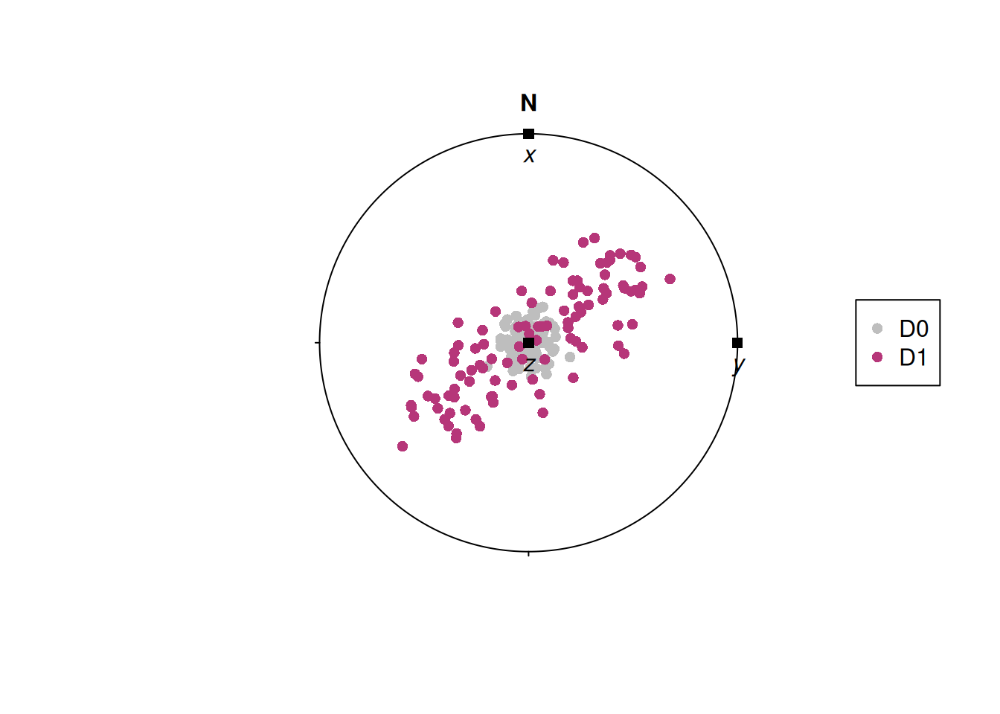
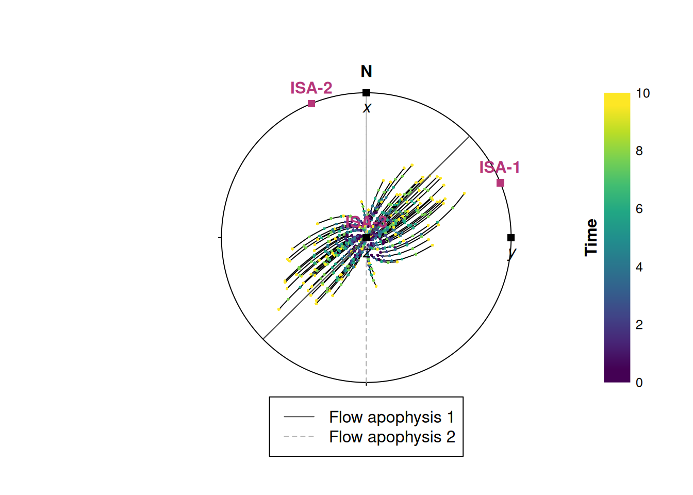
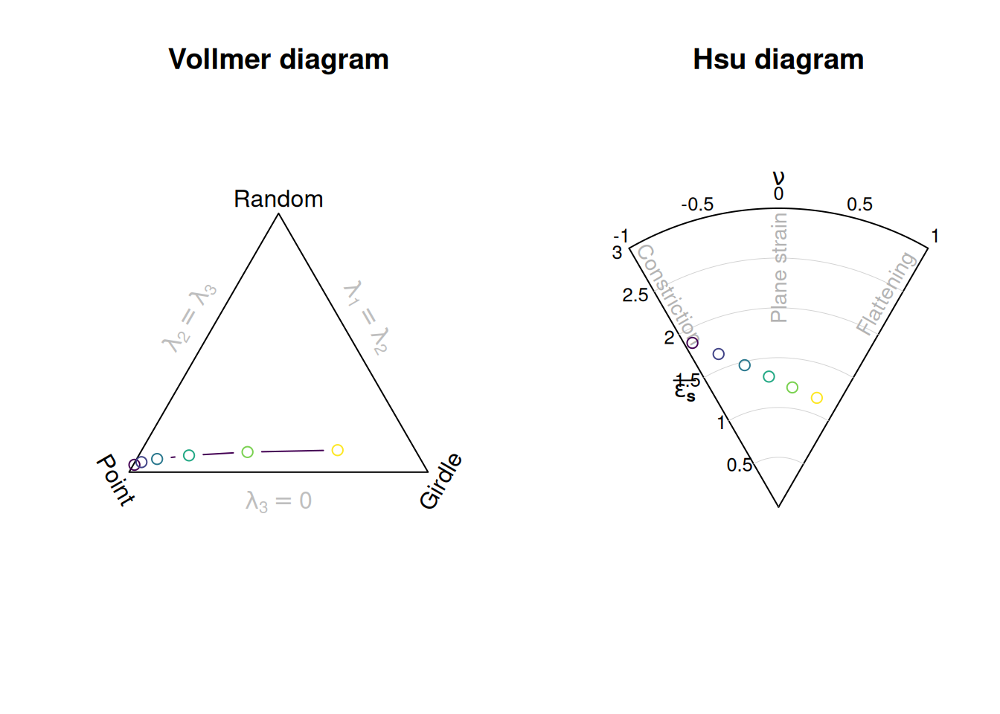

This tutorial demonstrates how {structr} can be used to deform orientation data using deformation and velocity gradient tensors. This can be useful to simulate progressive deformation and change of orientation. It will also demonstrate how you can combine different deformation tensors, and how to extract other flow parameters (such as vorticity, stretching, and dilatation).
Deformation gradient tensor
The 3D deformation gradient tensor F is a matrix that linearly transforms points. In other words, it describes how the positions of points change in three dimensions during homogeneous deformation.
Define a deformation gradient tensor
The deformation matrix can be defined in several ways:
-
defgrad_by_comp()creates a tensor defined by its individual components (default is the identity tensor). -
defgrad_by_ratio()creates an isochoric tensor with axial stretches defined by strain ratios (default is the identity tensor). -
defgrad_from_vectors()creates a tensor representing a rotation around the axis perpendicular to both vectors, rotatingv1tov2. -
defgrad_from_axisangle()creates a tensor representing a rigid-body rotation about an axis by an angle. -
defgrad_from_pureshear()creates an isochoric coaxial tensor. -
defgrad_from_simpleshear()creates an isochoric non-coaxial tensor. -
defgrad_from_generalshear()creates an isochoric tensor, where transtension is and , and transpression is and (Sanderson & Marchini, 19841; Fossen & Tikoff, 19932). -
defgrad_from_dilation()creates a tensor representing volume change in the z-direction.
D1 <- defgrad_from_generalshear(k = 2.5, gamma = 0.9)
print(D1)
#> Deformation gradient tensor
#> [,1] [,2] [,3]
#> [1,] 1 1.473332 0.0
#> [2,] 0 2.500000 0.0
#> [3,] 0 0.000000 0.4Matrix algebra
An isochoric deformation tensor creates deformation without volume change. In that case, the determinant of the matrix must be 1. In R, this can be checked using det():
det(D1)
#> [1] 1The inverse of the tensor reverses the deformation. In R, this can be done using solve():
solve(D1)
#> [,1] [,2] [,3]
#> [1,] 1 -0.5893326 0.0
#> [2,] 0 0.4000000 0.0
#> [3,] 0 0.0000000 2.5The eigenvectors of F itself are the material lines that are not rotated by the deformation (the finite apophyses). Only for coaxial deformation (symmetric F) do they coincide with the principal axes of the strain ellipsoid.
eigen(D1)
#> eigen() decomposition
#> $values
#> [1] 2.5 1.0 0.4
#>
#> $vectors
#> [,1] [,2] [,3]
#> [1,] 0.7007364 1 0
#> [2,] 0.7134203 0 0
#> [3,] 0.0000000 0 1The orientation and shape of the strain ellipsoid are given by the left Cauchy–Green tensor : its eigenvectors are the principal strain axes, and the square roots of its eigenvalues are the principal stretches (i.e. the lengths of the ellipsoid axes):
Deformation tensors can be combined using matrix multiplication. The resulting deformation from our general-shear deformation (D1) superimposed by our rotation (D2) is
D2 <- defgrad_from_axisangle(Line(0, 90), 30)
D12 <- D2 %*% D1 # D1 is applied firstCaution
Matrix multiplication is not commutative, i.e. in general .
Transformation using deformation gradient tensor
The deformation can now be applied on some orientation data using linear transformation:
# generate some random lineation
xl <- rvmf(100, mu = Line(0, 90), k = 100)
xl_transformed <- transform_linear(xl, D1)
head(xl_transformed)
#> Vector (Vec3) object (n = 6):
#> x y z
#> [1,] 0.14739869 0.06221709 0.3974155
#> [2,] 0.34631353 0.18893690 0.3876244
#> [3,] -0.26872762 -0.29431706 0.3953859
#> [4,] 0.04479873 0.03775757 0.3998527
#> [5,] 0.10463240 0.14584865 0.3992488
#> [6,] -0.23724406 -0.26484370 0.3964220Let’s visualize the deformation:
# The coordinate axes of our deformation tensor:
axes <- Vec3(c(1, 0, 0), c(0, 1, 0), c(0, 0, 1))
stereoplot(guides = FALSE) # turn off guidelines for better visibility
points(xl, col = "grey", pch = 16)
points(xl_transformed, col = "#B63679FF", pch = 16)
points(axes, pch = 15)
text(axes, labels = c("x", "y", "z"), pos = 1, font = 3)
legend("right", legend = c("D0", "D1"), col = c("grey", "#B63679FF"), pch = 16)
Velocity gradient tensor
The velocity gradient tensor L describes the velocity of particles at any instant during the deformation. It can be derived from a deformation gradient tensor:
- The
timeargument specifies the duration over which the finite deformation F accumulates, so that steady flow with velocity gradient L for this time produces F.
L <- velgrad(D1, time = 10)Decomposition
The velocity gradient tensor L can be decomposed into a symmetric matrix S (the strain rate or stretching tensor) and a skew-symmetric matrix W (the spin tensor).
The stretching tensor describes the portion of the deformation that over time produces strain:
S <- velgrad_rate(L)The spin tensor contains information about the internal rotation during the deformation:
W <- velgrad_spin(L)The eigenvectors of the stretching tensor give the orientations of the instantaneous stretching axes, and its eigenvalues the instantaneous stretching rates:
Tip
The shortcut functions
instantaneous_stretching_axes(L)andinstantaneous_stretching(L)produce the same results as above.
The eigenvectors of the velocity gradient tensor describe the flow apophyses:
Tip
Shortcut:
flow_apophyses(L)
The angle α between the apophyses is directly related to how close to simple shear or pure shear the deformation is. α is zero for simple shear and 90° for pure shear. The kinematic vorticity number is given by :
Tip
Shortcut:
kinematic_vorticity_from_velgrad(L)
The vorticity vector is the axial vector of the spin tensor W. For monoclinic flows such as this one, it is parallel to the eigenvector of L that is common to both flow apophysis planes:
Tip
Shortcut:
vorticity_vector(L)
Strain increments
Now we can extract the deformation gradient tensor accumulated after a given time. Here we extract the deformation gradient tensors for some time steps using defgrad():
- The
stepsargument specifies how many increments you would like to extract (this is also the “resolution” of the deformation path). - The
timeargument is the total duration of the deformation.
D1_steps <- defgrad(L, time = 10, steps = 2)Now apply the deformation tensors on some orientation data:
xl_steps <- lapply(D1_steps, function(i) {
transform_linear(xl, i)
})Visualization of deformation over time
And plot the paths showing how the orientations change over time:
increments <- seq(0, 10, 2)
cols <- assign_col(increments)
stereoplot(guides = FALSE) # turn off guidelines for better visibility
# plot the strain increments
stereo_path(xl_steps, type = "l")
stereo_path(xl_steps, type = "p", col = cols, pch = 16, cex = .4)
# flow apophyses
lines(flow_apophyses, col = c("grey30", "grey70"), lty = c(1, 2))
# instantaneous stretching axes
points(axes_ISA, pch = 15, col = "#B63679FF")
text(axes_ISA, labels = c("ISA-1", "ISA-2", "ISA-3"), col = "#B63679FF", pos = 3, font = 2)
# coordinate axes of def-tensor
points(axes, pch = 15)
text(axes, labels = c("x", "y", "z"), pos = 1, font = 3)
# legend
legend(0, -1.1,
xjust = 0.5,
legend = c("Flow apophysis 1", "Flow apophysis 2"),
col = c("grey30", "grey70"),
lty = c(1, 2)
)
legend_col(increments, title = "Time")
We can also monitor how the orientation tensor changes during progressive deformation:
par(mfrow = c(1, 2))
vollmer_plot(xl_steps, type = "b", col = cols)
hsu_plot(xl_steps, type = "b", col = cols)